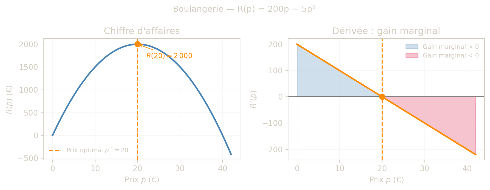
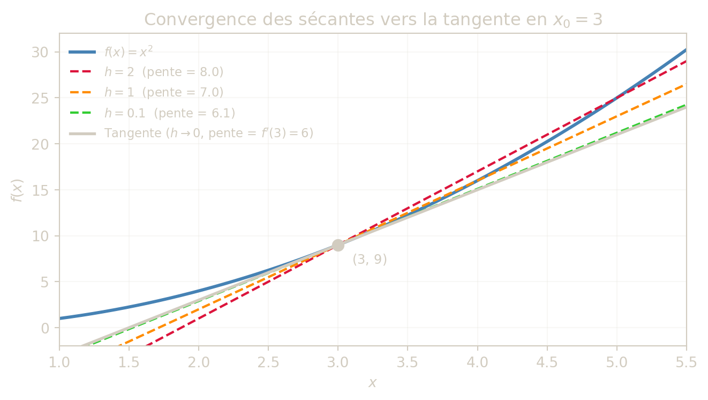
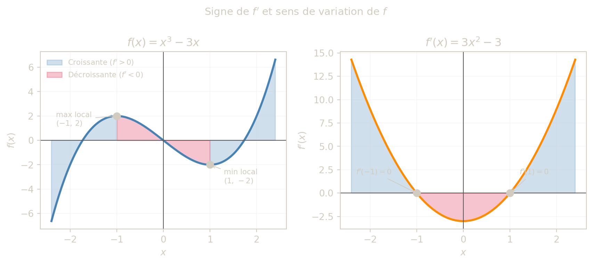

ImportantObjectifs
- Comprendre la dérivée d’une fonction univariée
- Savoir calculer et interpréter une dérivée
- Étudier le sens de variation d’une fonction
- Comprendre et calculer l’élasticité
0.1 Introduction
NotePourquoi apprendre les dérivées ?
Imaginez que vous gérez une boulangerie. Votre chiffre d’affaires quotidien est \(R(p) = 200p - 5p^2\), ou \(p\) est le prix d’une baguette en euros.
Si vous augmentez \(p\) de 1 centime, votre chiffre d’affaires augmente-t-il ou diminue-t-il ? De combien exactement ?
C’est précisément ce que mesure la dérivée : la variation instantanée d’une grandeur par rapport à une autre. Dans cet exemple, \(R'(p)\) indique le gain (ou la perte) de chiffre d’affaires pour une hausse de prix infinitésimale.
Ce module présente les notions fondamentales de dérivation des fonctions univariées et leur interprétation économique.
Exemple économique
Le graphique ci-dessous illustre le cas de la boulangerie : à gauche le chiffre d’affaires \(R(p)\), à droite sa dérivée \(R'(p)\) qui mesure le gain marginal.

0.2 Définition de la dérivée
Une fonction \(f\) est dite dérivable en \(x\) si le taux d’accroissement \(\frac{f(x+h)-f(x)}{h}\) admet une limite quand \(h \to 0\).
On définit alors :
\[ f'(x) = \lim_{h \to 0} \frac{f(x+h)-f(x)}{h} \]
0.3 Intuition : du taux moyen au taux instantané
Le quotient
\[ \frac{f(x+h)-f(x)}{h} \]
mesure une variation moyenne de \(f\) entre \(x\) et \(x+h\). Quand \(h\) devient très petit, on “zoome” autour de \(x\) : cette variation moyenne tend vers une variation instantanée.
C’est exactement ce que représente la dérivée \(f'(x)\) :
- en géométrie : la pente de la tangente ;
- en économie : un effet marginal (coût marginal, recette marginale, etc.).
Mini-lecture numérique
Pour \(f(x)=x^2\) au point \(x=3\) :
\[ \frac{f(3+h)-f(3)}{h}=\frac{(3+h)^2-9}{h}=6+h \]
Si \(h=1\), on obtient \(7\) ; si \(h=0.1\), on obtient \(6.1\) ; si \(h=0.01\), on obtient \(6.01\). La valeur se rapproche de \(6\), donc \(f'(3)=6\).

À retenir
- On calcule d’abord un taux moyen.
- On fait tendre \(h\) vers 0.
- La limite obtenue est la dérivée (taux instantané).
Exercice interactif — Convergence de h → 0
Utilisez le curseur pour faire varier \(h\) et observez comment la pente de la sécante se rapproche de \(f'(3) = 6\).
Exemple détaillé : \(f(x)=x^2\)
\[ \begin{aligned} \frac{f(x+h)-f(x)}{h} &= \frac{(x+h)^2-x^2}{h} \\ &= \frac{x^2+2xh+h^2-x^2}{h} \\ &= 2x+h \end{aligned} \]
Donc :
\[ f'(x) = \lim_{h \to 0}(2x+h)=2x \]
Exemples rapides
- \(f(x)=\frac{1}{x} \Rightarrow f'(x)=-\frac{1}{x^2}\)
- \(f(x)=\sqrt{x} \Rightarrow f'(x)=\frac{1}{2\sqrt{x}}, \; x>0\)
0.4 Dérivées des fonctions usuelles
| Fonction \(f(x)\) | Dérivée \(f'(x)\) | Condition |
|---|---|---|
| \(k\) | \(0\) | \(k\) constante réelle |
| \(kx\) | \(k\) | \(k\) constante réelle |
| \(x^n\) | \(nx^{n-1}\) | \(n \in \mathbb{N}\) |
| \(\frac{1}{x^n}\) | \(\frac{-n}{x^{n+1}}\) | \(x \neq 0\) |
| \(\sqrt{x}\) | \(\frac{1}{2\sqrt{x}}\) | \(x > 0\) |
| \(e^x\) | \(e^x\) | |
| \(\ln(x)\) | \(\frac{1}{x}\) | \(x>0\) |
TipComment lire ce tableau
- La constante ne varie jamais : \(f(x)=5 \Rightarrow f'(x)=0\).
- La dérivée de \(kx\) est la pente \(k\) : une augmentation de 1 de \(x\) fait varier \(f\) de \(k\) unités.
- La dérivée de \(x^n\) “abaisse l’exposant d’un cran” : \(x^4 \to 4x^3\).
- \(e^x\) est sa propre dérivée : son taux de croissance instantané est égal à sa valeur — propriété remarquable exploitée en finance (actualisation).
ImportantDomaine de définition
La dérivée n’est définie que là où la fonction est définie. Par exemple, \(\ln(x)\) impose \(x > 0\), donc \((\ln(x))' = \frac{1}{x}\) est également valable uniquement pour \(x > 0\).
Toujours préciser le domaine de définition avant de dériver.
1 Partie 2 - Fonctions composées
1.1 Règles de dérivation
| Règle | Formule |
|---|---|
| Somme | \((u+v)' = u' + v'\) |
| Produit | \((uv)' = u'v + uv'\) |
| Quotient | \(\left(\dfrac{u}{v}\right)' = \dfrac{u'v - uv'}{v^2}\) |
| Exponentielle composée | \((e^{u(x)})' = u'(x)\,e^{u(x)}\) |
| Logarithme compose | \((\ln(u(x)))' = \dfrac{u'(x)}{u(x)}\) |
| Puissance composée | \((u(x)^n)' = n\,u'(x)\,u(x)^{n-1}\) |
TipLa règle du produit en detail
La règle \((uv)' = u'v + uv'\) est souvent source d’erreurs. Pensez-y ainsi : quand le produit de deux quantités varie, chaque terme contribue tour à tour pendant que l’autre reste fixe. On additionne les deux contributions.
1.2 Exemples pas a pas
Règle de la somme : \(f(x) = 4x - e^x\)
On pose \(u(x)=4x\) et \(v(x)=e^x\).
\[ u'(x)=4, \qquad v'(x)=e^x \]
\[ f'(x) = 4 - e^x \]
Règle du produit : \(f(x) = (2x+3)\,e^x\)
On pose \(u(x)=2x+3\) et \(v(x)=e^x\).
\[ u'(x)=2, \qquad v'(x)=e^x \]
\[ f'(x) = u'v + uv' = 2\,e^x + (2x+3)\,e^x = e^x(2x+5) \]
Règle du quotient : \(f(x) = \dfrac{\ln(x)}{2x^2}\)
On pose \(u(x)=\ln(x)\) et \(v(x)=2x^2\).
\[ u'(x)=\frac{1}{x}, \qquad v'(x)=4x \]
\[ f'(x) = \frac{\frac{1}{x}\cdot 2x^2 - \ln(x)\cdot 4x}{(2x^2)^2} = \frac{2x - 4x\ln(x)}{4x^4} = \frac{1 - 2\ln(x)}{2x^3} \]
Exponentielle composée : \(f(x) = e^{2x^2+3x}\)
On pose \(u(x)=2x^2+3x\).
\[ u'(x)=4x+3 \]
\[ f'(x) = u'(x)\,e^{u(x)} = (4x+3)\,e^{2x^2+3x} \]
Logarithme compose : \(f(x) = \ln(4x^2+2)\)
On pose \(u(x)=4x^2+2\).
\[ u'(x)=8x \]
\[ f'(x) = \frac{u'(x)}{u(x)} = \frac{8x}{4x^2+2} = \frac{4x}{2x^2+1} \]
WarningErreur classique
Ne pas confondre \((\ln(x))' = \frac{1}{x}\) et \((\ln(u(x)))' = \frac{u'(x)}{u(x)}\).
Toujours verifier si l’argument du \(\ln\) est une expression composée, et si oui, multiplier par sa dérivée.
2 Partie 3 - Interprétation de la dérivée
2.1 Interprétation géométrique
La dérivée \(f'(a)\) représente la pente de la tangente à la courbe de \(f\) au point d’abscisse \(a\).
2.2 Approximation locale utile
Pres d’un point \(a\), on peut approximer :
\[ f(a+h) \approx f(a) + f'(a)h \]
Cette formule donne une lecture pratique : \(f'(a)\) indique la variation attendue de \(f\) pour une petite variation de la variable.
2.3 Sens de variation
- Si \(f'(x)>0\), la fonction est croissante.
- Si \(f'(x)<0\), la fonction est décroissante.
- Si \(f'(x)=0\), \(x\) est un point critique.

Exercice interactif — Explorer le sens de variation
Choisissez une fonction et observez comment le signe de \(f'\) détermine la croissance ou la décroissance de \(f\).
2.4 Exercices
- Calculer les dérivées de \(3x^2\), \(5x^3-2x\), et \(\frac{1}{x}\).
- Étudier le sens de variation de \(f(x)=x^3-3x\).
- Calculer \(f'(2)\) pour \(f(x)=4x^4-3x^2+7\).
2.5 Exercices supplémentaires (issus du support)
- Dériver et donner le domaine de définition :
- \(f(x)=5\)
- \(g(x)=5x\)
- \(h(x)=-7x+2\)
- \(k(x)=5x^2+8x-3\)
- Dériver les fonctions composées :
- \(f(x)=(x-2)(2x+5)\)
- \(g(x)=x(3x-2)\)
- \(h(x)=\dfrac{\ln(x)}{2x^2}\)
- Étudier les variations de :
- \(u(x)=x^2-2x-3\)
- \(v(x)=\dfrac{1}{x}\)
- \(w(x)=e^{2x^2+3x}\)
2.6 Exercice interactif — Quiz de dérivation
Testez vos reflexes : une fonction s’affiche, choisissez la bonne dérivée et recevez un retour immédiat.
3 Conclusion
La dérivée mesure une variation marginale. Elle constitue un outil central pour l’analyse économique, la modélisation et la décision.